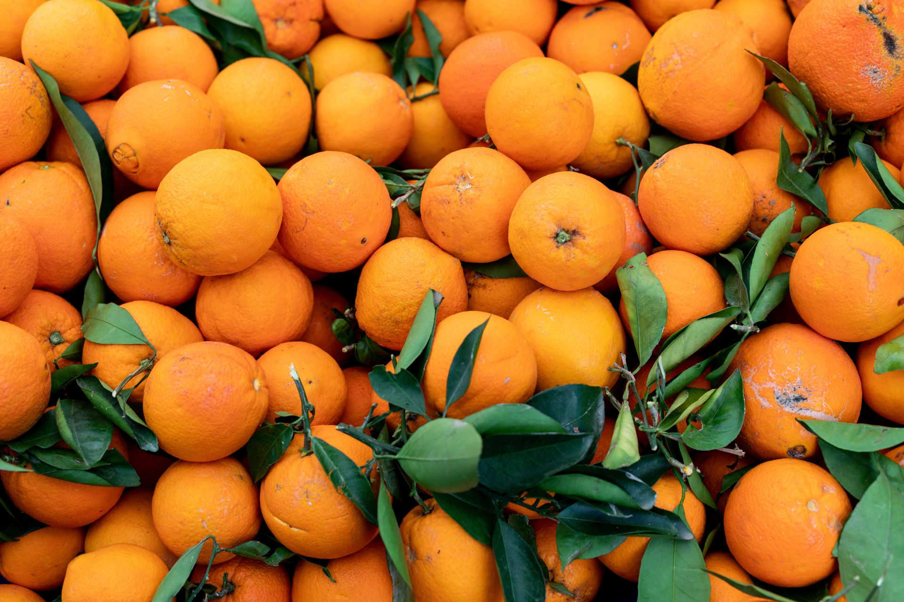

Laranja
R$ 7,90 kg
Dona Lourdes visita o Raya Supermercados há mais de 8 anos. Ela conta que, toda quinta-feira, passa para escolher frutas frescas e preparar o suco preferido dos netos — laranja com maçã!
Para ela, o mercado não é apenas um lugar de compra, é parte da rotina, das lembranças e do carinho em servir a família.
Modo de preparo:
Descasque as laranjas, pique a maçã e bata tudo no liquidificador
com a água e o gelo. Coe se desejar e sirva geladinho.
Refrescante e cheio de vitaminas!